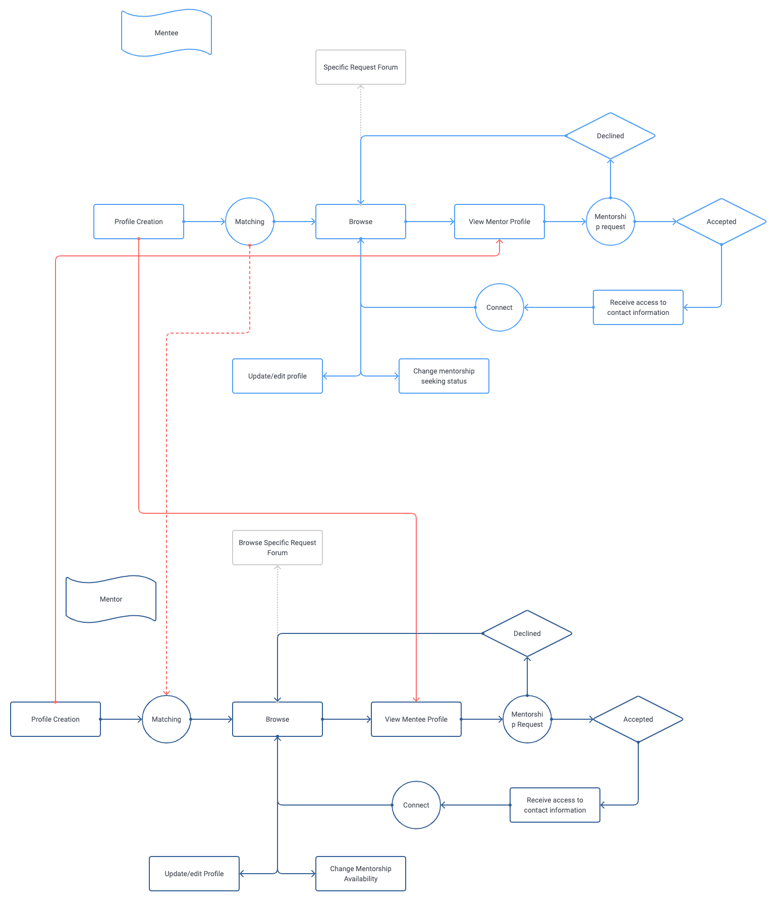
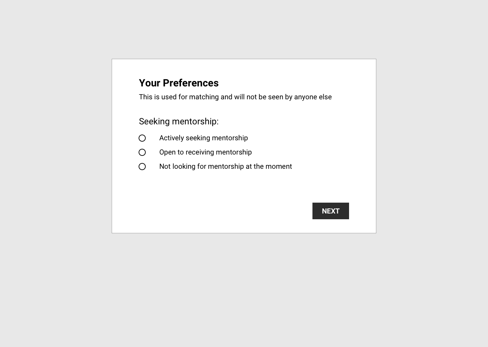
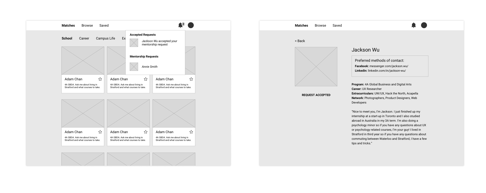
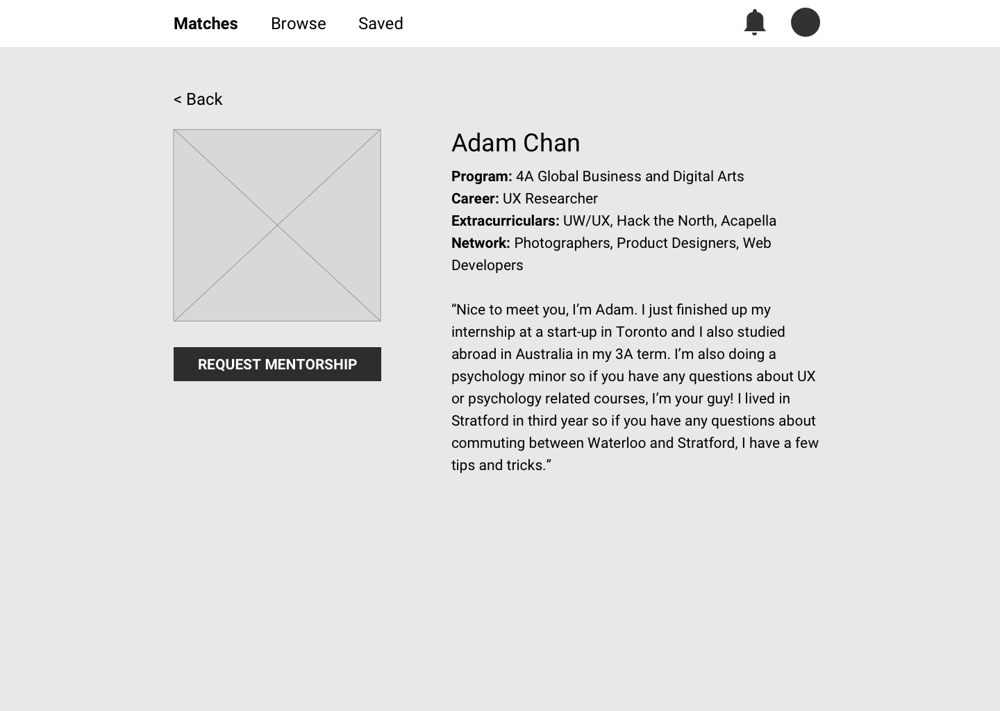
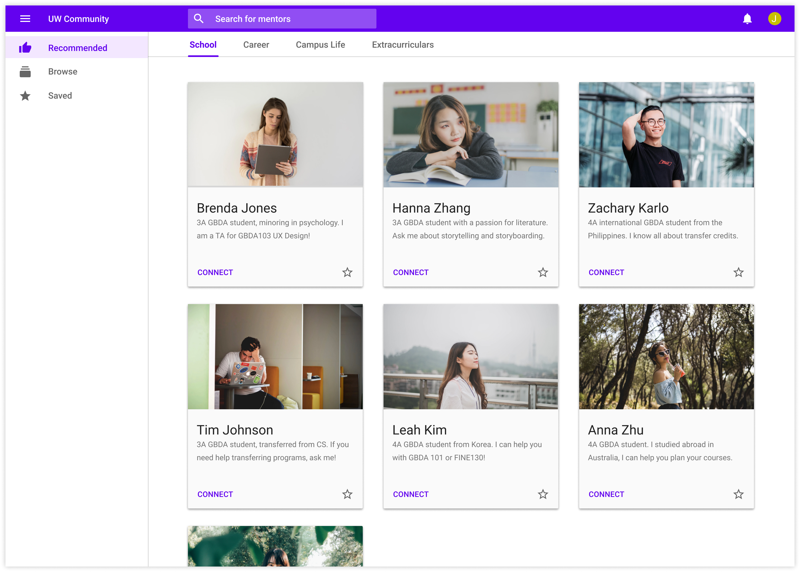
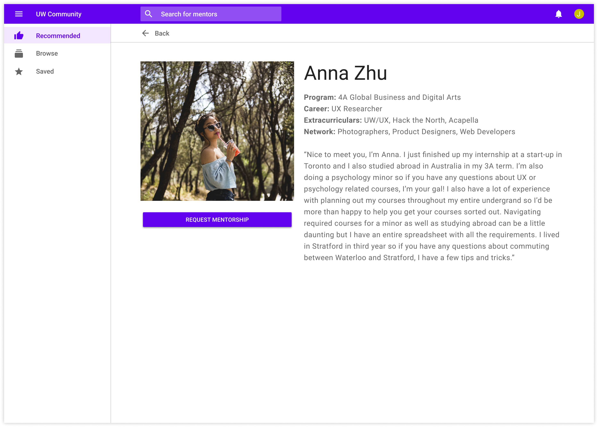

Discovering the problem
I interviewed 3 first years, 2 mentees, 2 upper years, and 3 mentors (past orientation leaders) to find out more about their experiences and what they look for in a mentor-mentee relationship.
First year insights ("new" students)
- Feeling lost in general
- Often too shy and don’t know how to reach out
- Struggle to meet the “right” mentor
- Various fields for mentorship
“I don’t want to annoy or bother upper years”
“I just don’t know
what’s going on”
Mentee insights (second year +)
- Met their mentors at community events (ex. mixers, clubs, conferences, hackathons, etc.)
- Grapevine: being introduced from someone else
“Mentorship is a lot like dating”
Upper year insights ("experienced" students)
- Won’t actively be looking to mentor someone
- Wouldn’t mind helping/mentoring if reached out to
- More “passive”
“If someone came up to me and ask for advice, I wouldn’t mind”
Mentor insights (orientation leaders, peer leaders, etc.)
- Actively encourage mentees to connect with them
- Want to provide the mentees with the best advice possible – if they can’t help them with something, they’ll try to connect them with someone who can (grapevine)
- Sometimes are too busy to mentor but still want to help
“I might not be able to help them but I usually know someone else who can”
Core Problems
-
Meeting the right people
This can be further broken down into:- Meeting people who have similar experiences (ex. Program, career, interests, campus living)
- Meeting all potential mentors
- Bridging gaps between mentor and mentees
These problems are intertwined, making them complex to solve individually.
Objectives
Help mentor and mentees discover each other and encourage> experienced students to connect with new students.
Goals:
- Make it easy for mentors and mentees to learn about each other
- Lower barriers to contact
- Involve other experienced students who aren’t active mentors
User flows
I used user flows to get a clearer picture as to what the experience might look like for both mentees and mentors. It’s a very high-level view just to keep me organized to visualize the interactions between mentors and mentees.
I then moved to Sketch to further flush out the flows through wireframes

Solving the problem
I chose to design for web because people don't like to download apps. A URL is a lower barrier to entry than downloading an app, encouraging more students to join the platform. It can be accessed from any device with an internet connection. There would also be a mobile app format to improve the experience on mobile, however it can also be accessed via web on mobile.
Profile creation
The purpose of the mentee and mentor profiles is to address goal #1, ease of discoverability. Mentees would input some basic information such as program, career goals, interests, etc. and in what areas they want mentorship in. Mentors would input the same sort of basic information and their experiences and areas of expertise. Mentors and mentees can then browse through and see if there are any potential for meaningful mentorships.

Since students are logging in with their student IDs, some fields of the their profile can be pre-populated (ex. name, program, email, etc.) to lessen the workload on the user.
The profile creation also serves as a questionnaire that is then used to personalize the dashboard. Some parts of the profile creation won’t be shown publicly and are used to match mentors to mentees and vice versa. For example, if a mentee states that they are more on the shy side, then their dashboard would display mentors who are more on the proactive side. That way, each mentee and mentor’s dashboard will be customized for the most optimal match. Mentees will be able to scroll through all available mentors on the platform and the mentors will be ranked from best match to least (and vice versa).
Preferred method of contact
Students have favourite messaging platforms and heavily prefer them as they use them daily. Most conversations that occur outside of those platforms will eventually get moved onto them in the end (findings from a previous survey). To lower the barrier to contact and ensure that the mentor-mentee relationship is sustained long-term (goal #2), the platform itself won’t serve as a messaging app rather it will display the preferred method of contact. If a mentee finds a mentor that they want to reach out to, they will send a mentorship request and if the mentor accepts it, then their contact information will be displayed (and vice versa) for privacy reasons. The mentorship request will also serve as a “notification” for the user to keep an eye out for a message on those platforms.
Mentor's network
As experienced students have been on campus longer, they are likely to have an established network of friends who also have experience. In addition to their profile, mentors will also have a network section where they can list areas where they may not personally be able to help but know people who can. As many experienced students noted, they are more than happy to help if someone reached out to them though they may not actively seek out mentees. This way, the “active” mentors can act as a grapevine and a point of connection between mentees and “passive” mentors to keep other experienced students involved (goal #3).
Additional features
Update/edit profile
This platform has the potential to be more than just connecting new students to experienced students; even “experienced” students could still want to receive mentorship in certain areas. As students journey through university, their needs and experiences will change and so their profile should reflect that.
Status
To accommodate students’ ever changing, busy schedules and needs, both
mentees and mentors can change their status which will be used to
calibrate their dashboard.
Mentees: as new students progress through their first year, the urgency
of their need for mentorship in different areas will change.
Mentors: the status is directly reflective of their availability as
certain times of the year will be busier than others.
High fidelity

Considerations
Interviewing 10 users is not representative of the entire student demographic but due to time and resource constraints, it will suffice for the purposes of this exercise.
An aspect that could be explored further is transitioning from a mentee to a mentor or even looking for mentorship in one area but being a mentor in another.
A feature that I considered but didn’t fully flush out is having a forum where mentees can post more specific requests. The platform is currently doing it’s matching on very general criteria, though there may be topics that are a little more specific that mentees may want guidance on (ex. Trying to complete a double degree, taking a gap year, etc). Mentors can then browse through those requests and offer public advice (for any of those that may have a similar question) or reach out to the mentee as per usual. This feature was included in the user flow but greyed out. If I had more time, I would have explored it further.
Reflection
I spent a little too much time in the first diamond (discovering and ideating) and didn’t leave enough time for the second diamond (developing and delivering). I underestimated how much time doing the high-fidelity mockups would take and I should have allocated my time better.
However, I think that I was able to gather some valuable insights and ideate on features that could really help mentors and mentees discover and connect, and encourage experienced students to get involved.
If I had more time, I would definitely flush out the visual designs a lot more, prototype some interactions, and maybe even explore beyond just connecting new students to experienced students and making the platform a place that could be used by all students to share their experiences and to learn from one another.